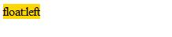
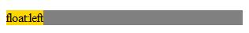
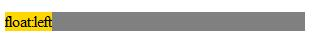
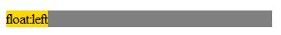
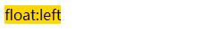
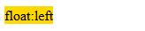

info
代码
<div style="width: 300px; background: gray;"> <div style="float: left; background: gold;">float:left</div> </div>
float:left
在触发hasLayout 的元素和创建了Block Formatting Contexts的元素中，浮动元素参与高度的计算。
【注】:IE8 标准文档模式下触发了haslayout 特性的元素不再拥有"清理" 浮动元素 功能，它回归了标准的Block Formatting Contexts 规范，只有创建BFC 后才拥 有此功能。
bfc vs haslayout01
haslayout01-效果截图
IE8-浏览器模式：IE8标准模式，文档模式：IE8标准模式

IE8-浏览器模式：IE8兼容模式，文档模式：IE7

IE8-浏览器模式：IE7，文档模式：IE7

IE8-浏览器模式：IE8兼容模式，文档模式：QUIRKS

CHROME

FIREFOX
